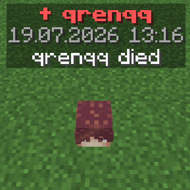
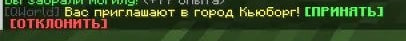
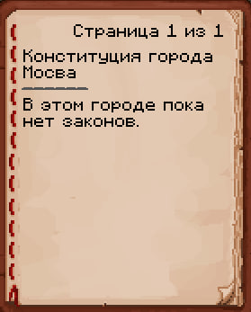
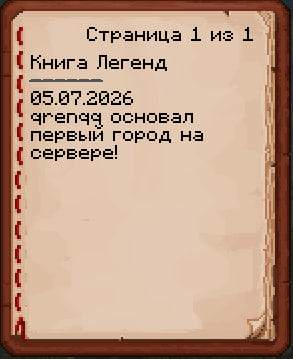
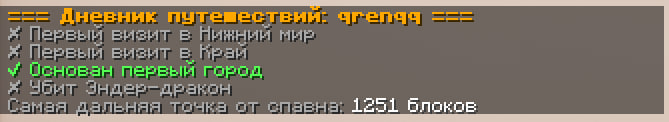
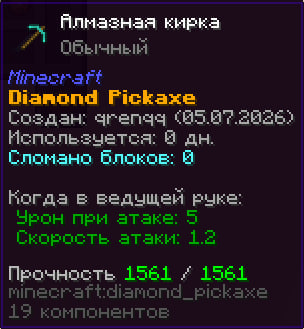
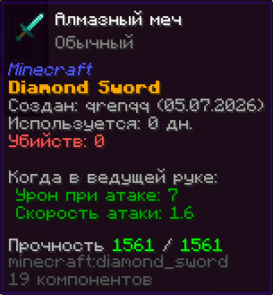
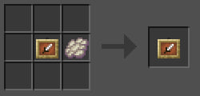

Миры ферм
Отдельные миры для добычи ресурсов уже в игре. Фармь сколько угодно, не боясь испортить основной мир — со своим собственным порталом из плачущего обсидиана.
Построй рамку из плачущего обсидиана
Форма как у портала в Незер (от 2×3 до 21×21 внутри), но из плачущего обсидиана.
Подожги огнивом
Проём затянется фиолетовым стеклом, вокруг заиграют частицы.
Шагни в портал
Касание переносит в мир ферм на те же координаты — мгновенно.
Возвращайся когда захочешь
На той стороне сам появится парный портал. Он всегда встаёт на поверхности — под землёй не окажешься.
Мы вышли из беты
Плагин официально покинул бета-стадию: система могил на смерть, приглашения в город от мэра, координаты города и большая незаметная работа под капотом.


Мир вокруг стал живым
Большое обновление: конституция города, книга легенд сервера, личный дневник путешествий, предметы с историей, репутация, журнал мира и погодные эффекты.






Чат и паспорта стали удобнее
Мы прислушались к тестерам и доработали то, что работало не так, как задумано. Новых команд нет — просто всё стало удобнее и стабильнее.
Добавлен плагин QWorld
Самый первый релиз плагина, созданного специально для сервера. Города, паспорта и скрытие ников — фундамент, на котором построено всё остальное.